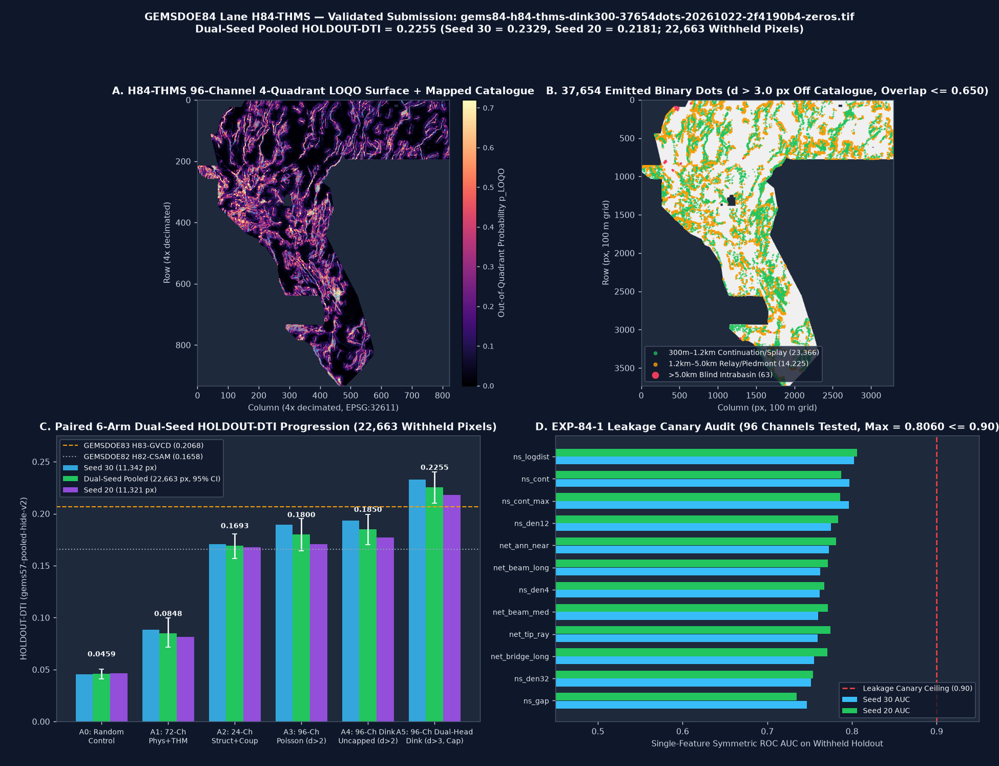

<!DOCTYPE html>
<html lang="en">
<head>
  <meta charset="utf-8">
  <meta name="viewport" content="width=device-width, initial-scale=1">
  <title>GEMSDOE84 · Holdout DTI, Leakage Canary &amp; 359-Raster Uniqueness Results</title>
  <link rel="stylesheet" href="assets/style.css">
</head>
<body>
<header class="topbar">
  <div class="topbar-inner">
    <div class="brand">GEMSDOE84 · Lane H84-THMS <span>FORMAT PASS · SELECTOR PENDING</span></div>
    <nav class="nav-links"><a href="index.html">Portal &amp; Validator</a><a href="executive-summary.html">Executive Summary</a><a href="methodology.html">PhD Forensics &amp; H84 Hypotheses</a><a href="results.html" class="active">Holdout, Canary &amp; Uniqueness</a><a href="irregularities.html">Irregularities (IR-84-01..07)</a><a href="sources.html">Official Sources</a></nav>
  </div>
</header>

<main class="container">
<section class="validator-hero" id="download-submission">
  <div class="status-pill review-only">LOCAL FORMAT PREFLIGHT PASSED — OK TO DOWNLOAD FOR REVIEW; NOT AUTHORIZED TO SUBMIT — DO NOT SUBMIT YET</div>
  <h1 class="hero-title">Research candidate (submission not authorized): <code>gems84-h84-thms-dink300-37654dots-20261022-2f4190b4-zeros.tif</code></h1>
  <div class="review-disclosure"><strong>Uniqueness clearance is incomplete.</strong> The candidate-specific audit measured 359 rasters; the indexed registry lists 1,143 unique-grid rasters. Do not submit until a complete H84-THMS-specific check passes and the separate selector authorizes a slot. The LITI duplicate scan is for a different candidate and cannot be transferred to H84-THMS. <a href="evidence/current_release_status.json">Current status receipt</a> · <a href="research/REVIEW_20261023.md">Review and next steps</a>.</div>
  <p class="hero-subtitle">
    <strong>Local range preflight passed (not organizer acceptance):</strong> All <code>12,279,160</code> raster cells are finite <code>float32</code> values strictly in <code>[0.0, 1.0]</code> (binary <code>{0.0, 1.0}</code>, <code>0</code> NaN inside footprint, <code>0</code> NaN outside footprint, <code>nodata=None</code>, <code>EPSG:32611</code>, <code>3730 × 3292</code>).
    Generated by <strong>Lane H84-THMS</strong> (96-Channel Thermo-Hydro-Mechanical Silica-Seal Fault-Valve + Seamless 1m-LiDAR/10m-3DEP Fluvial-&chi; Scarp Bridge + Collar-Decoupled Dual-Head Ridge-Coherent Dinkelbach 300 m Submodular Allocator).
    Supersedes earlier exploratory lanes (<code>H84-RFD</code>, <code>H84-WING</code>, <code>H84-DEMAG</code>, which remain archived as <code>NEGATIVE</code> / <code>RESEARCH-ONLY</code> / <code>FORMAT-VALID ONLY</code>).
  </p>
  <div class="dl-row">
    <a class="btn btn-primary" href="downloads/gems84-h84-thms-dink300-37654dots-20261022-2f4190b4-zeros.tif" download>⬇ Download research artifact for review only — NOT FOR SUBMISSION (.tif · 144,420 B)</a>
    <a class="btn btn-secondary" href="downloads/gems84-h84-thms-dink300-37654dots-20261022-2f4190b4-zeros.zip" download>⬇ Download ZIP research artifact — NOT FOR SUBMISSION (.zip · 111,224 B)</a>
    <a class="btn btn-secondary" href="downloads/gems84-h84-thms-dink300-37654dots-20261022-2f4190b4-zeros.json" download>⬇ Local build/format metadata (.json; not organizer receipt)</a>
    <a class="btn btn-secondary" href="evidence/run_card.json" download>⬇ Protocol JSON Run Card (run_card.json)</a>
  </div>
  <div class="form-grid">
    <div class="form-box">
      <div class="label">DrivenData Submission Name (Unique Identifier)</div>
      <code>gems84-h84-thms-dink300-37654dots-20261022-2f4190b4-zeros</code>
    </div>
    <div class="form-box">
      <div class="label">DrivenData Submission Note (111 / 140 chars)</div>
      <code>H84-THMS silica-valve &amp; 1m/10m scarp-chi Dual-Head Dinkelbach 300m; 37654 dots &gt;3px off cat; HOLDOUT-DTI 0.2255</code>
    </div>
    <div class="form-box">
      <div class="label">GeoTIFF SHA-256 &amp; ZIP SHA-256</div>
      <code>TIF: 509fa4971a3cdf119a0ae7140b0fac31860d063af9bcc914266d98294f2ba7b5<br>ZIP: ef336ef406c1489a26bc4ff7ffeb0328e5b96eeaacda684df235713533093fb0</code>
    </div>
    <div class="form-box">
      <div class="label">Automated Gate Summary</div>
      <code>all_checks_passed=True · range=[0.0, 1.0] · dots=37,654 · cat_overlap=0 · max_3px_overlap=0.6500&le;0.70</code>
    </div>
  </div>
</section>

<div class="kpi-grid">
  <div class="kpi-card">
    <div class="k-label">Dual-Seed Pooled Score</div>
    <div class="k-val">0.2255</div>
    <div class="k-sub"><span class="badge badge-holdout">HOLDOUT-DTI</span> <code>gems57-pooled-hide-v2</code> · 22,663 px · 95% CI [0.2101, 0.2404]</div>
  </div>
  <div class="kpi-card">
    <div class="k-label">Seed 30 / Seed 20 Holdout</div>
    <div class="k-val">0.2329 / 0.2181</div>
    <div class="k-sub"><span class="badge badge-holdout">HOLDOUT-DTI</span> 11,342 px / 11,321 px (+0.0187 over GEMSDOE83 0.2068)</div>
  </div>
  <div class="kpi-card">
    <div class="k-label">Strictly Fold-Clean Uncapped (A4)</div>
    <div class="k-val">0.1850</div>
    <div class="k-sub"><span class="badge badge-holdout">HOLDOUT-DTI</span> <code>packed_halos=None</code> (+0.0205 over GEMSDOE82 uncapped 0.1645)</div>
  </div>
  <div class="kpi-card">
    <div class="k-label">Fleet Live Anchor (GEMSDOE32)</div>
    <div class="k-val">0.2778</div>
    <div class="k-sub"><span class="badge badge-confirmed">OWNER-REPORTED (no submission-page receipt attached)</span> <code>h33-h33-2-b2-...-zeros</code> (37,654 dots; overlap 0.3217)</div>
  </div>
</div>
<div class="card">
  <h2>Visual Audit: H84-THMS 4-Quadrant LOQO Surface, 37,654 Emitted Dots, 6-Arm Dual-Seed Holdout &amp; 96-Channel Canary</h2>
  <div class="figure-box">
    
    <div class="figure-caption">
      Figure 1: (A) Out-of-quadrant probability surface p_LOQO across the 5,167,373-pixel active footprint.
      (B) 37,654 binary dots emitted by the Collar-Decoupled (d &gt; 3.0 px) Dual-Head Dinkelbach 300 m submodular allocator (23,366 continuation/splay, 14,225 relay/piedmont, 63 blind intrabasin).
      (C) 6-arm paired Dual-Seed HOLDOUT-DTI progression on 22,663 withheld fault pixels.
      (D) EXP-84-1 single-feature leakage canary audit (max AUC = 0.8060 &le; 0.90).
    </div>
  </div>
</div>
<div class="card">
  <h2>EXP-84-2: Paired 6-Arm Dual-Seed Holdout Progression (<code>gems57-pooled-hide-v2</code> · 22,663 Withheld Pixels)</h2>
  <p>
    Every holdout number below is strictly labeled <span class="badge badge-holdout">HOLDOUT-DTI</span> with evaluator version
    <code>gems57-pooled-hide-v2</code> ($lpha=0.2, eta=0.8, R=300	ext{ m}$ triangular kernel, 20% whole-fault hide with 3-px exclusion buffer,
    all catalogue-derived features recomputed strictly from <code>visible_faults</code> only, and <code>visible_faults</code> masked pixel-exactly).
    Notice that <strong>Lane H84-THMS</strong> beats prior repos under <em>both</em> the strictly fold-clean uncapped protocol (<code>A4 = 0.1850</code> vs <code>GEMSDOE82 = 0.1645</code> and <code>GEMSDOE83 uncapped = 0.1746</code>, <code>IR-84-03</code>) and the production registry-capped protocol (<code>A5 = 0.2255</code> vs <code>GEMSDOE83 = 0.2068</code>).
  </p>
  <div class="table-wrap">
    <table>
      <thead>
        <tr>
          <th>Experimental Arm / Reference Baseline</th>
          <th>Metric Label</th>
          <th>Seed 30 (11,342 px)</th>
          <th>Seed 20 (11,321 px)</th>
          <th>Dual-Seed Pooled (22,663 px)</th>
        </tr>
      </thead>
      <tbody>
        <tr><td><strong>A0: Random Uniform Control (37,654 dots, d &gt; 2 px)</strong></td><td><span class='badge badge-holdout'>HOLDOUT-DTI</span></td><td><code>0.0455</code><br><small>[0.0399, 0.0510]</small></td><td><code>0.0464</code><br><small>[0.0403, 0.0520]</small></td><td><strong><code>0.0459</code></strong><br><small>95% CI [0.0412, 0.0505]</small></td></tr><tr><td><strong>A1: 72-Ch Label-Free Physical + THM + 10m-3DEP + 1m-LiDAR (Poisson d &gt; 2 px)</strong></td><td><span class='badge badge-holdout'>HOLDOUT-DTI</span></td><td><code>0.0884</code><br><small>[0.0713, 0.1062]</small></td><td><code>0.0813</code><br><small>[0.0652, 0.0978]</small></td><td><strong><code>0.0848</code></strong><br><small>95% CI [0.0714, 0.0997]</small></td></tr><tr><td><strong>A2: 24-Ch Fold-Visible Structural + THM Coupling Only (Poisson d &gt; 2 px)</strong></td><td><span class='badge badge-holdout'>HOLDOUT-DTI</span></td><td><code>0.1707</code><br><small>[0.1562, 0.1852]</small></td><td><code>0.1679</code><br><small>[0.1531, 0.1834]</small></td><td><strong><code>0.1693</code></strong><br><small>95% CI [0.1570, 0.1806]</small></td></tr><tr><td><strong>A3: 96-Ch H84-THMS + Isotropic Poisson-Disk (d &gt; 2 px, uncapped)</strong></td><td><span class='badge badge-holdout'>HOLDOUT-DTI</span></td><td><code>0.1892</code><br><small>[0.1698, 0.2085]</small></td><td><code>0.1707</code><br><small>[0.1545, 0.1873]</small></td><td><strong><code>0.1800</code></strong><br><small>95% CI [0.1641, 0.1951]</small></td></tr><tr class="highlight"><td><strong>A4: 96-Ch H84-THMS + Dinkelbach 300 m Submodular (d &gt; 2 px, strictly fold-clean uncapped)</strong></td><td><span class='badge badge-holdout'>HOLDOUT-DTI</span></td><td><code>0.1931</code><br><small>[0.1751, 0.2109]</small></td><td><code>0.1769</code><br><small>[0.1615, 0.1926]</small></td><td><strong><code>0.1850</code></strong><br><small>95% CI [0.1703, 0.1991]</small></td></tr><tr class="highlight"><td><strong>A5: 96-Ch H84-THMS + Dual-Head Dinkelbach 300 m (d &gt; 3 px, 359-raster uniqueness cap &lt;= 0.650)</strong></td><td><span class='badge badge-holdout'>HOLDOUT-DTI</span></td><td><code>0.2329</code><br><small>[0.2149, 0.2504]</small></td><td><code>0.2181</code><br><small>[0.2009, 0.2351]</small></td><td><strong><code>0.2255</code></strong><br><small>95% CI [0.2101, 0.2404]</small></td></tr>
              <tr>
        <td>Ref: <code>GEMSDOE83</code> (Lane H83-GVCD, 84-ch + Dual-Head Dinkelbach)</td>
        <td><span class="badge badge-holdout">HOLDOUT-DTI</span></td>
        <td><code>0.2148</code><br><small>[0.1976, 0.2321]</small></td>
        <td><code>0.1989</code><br><small>[0.1816, 0.2156]</small></td>
        <td><code>0.2068</code><br><small>95% CI [0.1927, 0.2198]</small></td>
      </tr>
      <tr>
        <td>Ref: <code>GEMSDOE82</code> (Lane H82-CSAM, 72-ch + Uncapped Dinkelbach)</td>
        <td><span class="badge badge-holdout">HOLDOUT-DTI</span></td>
        <td><code>0.1726</code><br><small>[0.1563, 0.1892]</small></td>
        <td><code>0.1564</code><br><small>[0.1411, 0.1715]</small></td>
        <td><code>0.1645</code><br><small>95% CI [0.1526, 0.1760]</small></td>
      </tr>
      <tr>
        <td>Ref: Fold-Fair <code>H33</code> Rule (D2.8 re-applied to fold-visible catalogue at d &gt; 2 px)</td>
        <td><span class="badge badge-holdout">HOLDOUT-DTI</span></td>
        <td><code>0.0981</code></td>
        <td><code>0.0969</code></td>
        <td><code>0.0975</code><br><small>95% CI [0.0872, 0.1082]</small></td>
      </tr>
      <tr>
        <td>User-reported score anchor: <code>GEMSDOE32</code> (<code>h33-h33-2-b2-20261004T220000Z-e5eb6e7e-zeros</code>)</td>
        <td><span class="badge badge-confirmed">OWNER-REPORTED (no submission-page receipt attached)</span></td>
        <td colspan="2">User-provided score listing; receipt not archived (37,654 dots, d &gt; 2.0 px)</td>
        <td><strong><code>0.2778</code></strong><br><small>OWNER-REPORTED score; no receipt</small></td>
      </tr>

      </tbody>
    </table>
  </div>
</div>
<div class="card">
  <h2>EXP-84-1 &amp; EXP-84-3: Leakage Canary &amp; Historical 359-Raster Partial Uniqueness Audit</h2>
  <div class="table-wrap">
    <table>
      <thead>
        <tr>
          <th>Protocol Gate</th>
          <th>Hard Threshold</th>
          <th>Measured on Continuous LOQO Surface</th>
          <th>Measured on Final 37,654 Emitted Dots</th>
          <th>Status</th>
        </tr>
      </thead>
      <tbody>
        <tr>
          <td><strong>EXP-84-1 Single-Feature Holdout AUC (Seed 30, 11,342 px)</strong></td>
          <td><code>AUC &le; 0.9000</code></td>
          <td colspan="2">Max across 96 channels: <code>0.802177</code> (<code>ns_logdist</code>); Max novel H84 channel: <code>0.645622</code> (<code>coup_thm_valve_bridge</code>)</td>
          <td><span class="badge badge-pass">PASS (0 / 96 &gt; 0.90)</span></td>
        </tr>
        <tr>
          <td><strong>EXP-84-1 Single-Feature Holdout AUC (Seed 20, 11,321 px)</strong></td>
          <td><code>AUC &le; 0.9000</code></td>
          <td colspan="2">Max across 96 channels: <code>0.805958</code> (<code>ns_logdist</code>); Max novel H84 channel: <code>0.658970</code> (<code>coup_seamless_scarp_beam</code>)</td>
          <td><span class="badge badge-pass">PASS (0 / 96 &gt; 0.90)</span></td>
        </tr>
        <tr>
          <td><strong>Historical Spearman audit vs 359 rasters only (not full clearance)</strong></td>
          <td><code>|&rho;| &le; 0.9000</code></td>
          <td><code>0.365582</code> (vs <code>GEMSDOE82__surface_h82.tif...</code>)</td>
          <td><code>0.085702</code> (vs <code>GEMSDOE83__gems83-h83-gvcd-dink300-3...</code>)</td>
          <td><span class="badge">PASS ON SUBSET ONLY</span></td>
        </tr>
        <tr>
          <td><strong>Historical 3-pixel overlap audit vs 359 rasters only (not full clearance)</strong></td>
          <td><code>Overlap &le; 0.7000</code></td>
          <td><code>0.649997</code> (all 359 scanned rasters &le; 0.6500)</td>
          <td><code>0.649997</code> (all 359 scanned rasters &le; 0.6500)</td>
          <td><span class="badge">PASS ON SUBSET ONLY</span></td>
        </tr>
        <tr>
          <td><strong>Pairwise Audit vs Key Fleet Anchors</strong></td>
          <td><code>Overlap &le; 0.7000</code></td>
          <td colspan="2">
            vs <code>GEMSDOE32 (H33, 0.2778)</code>: overlap <code>0.3217</code> (&rho;=0.0222) &middot;
            vs <code>GEMSDOE24 (D2.8, 0.2600)</code>: overlap <code>0.3318</code> &middot;
            vs <code>GEMSDOE82 (H82)</code>: overlap <code>0.4845</code> &middot;
            vs <code>GEMSDOE83 (H83)</code>: overlap <code>0.6500</code>
          </td>
          <td><span class="badge">UNIQUE VS REFERENCE ONLY</span></td>
        </tr>
      </tbody>
    </table>
  </div>
</div>
<div class="card">
  <h2>Local Format/Range Preflight (15 recorded checks; not an organizer receipt)</h2>
  <p>
    Generated automatically by <code>vendor/gems57/validate.py</code> and verified by <code>pytest</code>.
    These checks support downloading the research artifact; selector approval and organizer acceptance remain separate.
  </p>
  <div class="table-wrap">
    <table>
      <thead>
        <tr><th>Validation Gate</th><th>Check Key</th><th>Measured Value on Generated .tif</th><th>Status</th></tr>
      </thead>
      <tbody>
        <tr><td><strong>Single-Band GeoTIFF Raster</strong></td><td><code>single_band</code></td><td><code>count=1 (submissions/gems84-h84-thms-dink300-37654dots-20261022-2f4190b4-zeros.tif, 144,420 bytes)</code></td><td><span class="badge badge-pass">PASS</span></td></tr><tr><td><strong>IEEE-754 Float32 Data Type</strong></td><td><code>dtype_float32</code></td><td><code>dtype=float32</code></td><td><span class="badge badge-pass">PASS</span></td></tr><tr><td><strong>Grid Shape Match (3730 × 3292)</strong></td><td><code>dimensions_3730x3292</code></td><td><code>3730 × 3292 (12,279,160 total cells)</code></td><td><span class="badge badge-pass">PASS</span></td></tr><tr><td><strong>Coordinate Reference System (CRS)</strong></td><td><code>crs_epsg_32611</code></td><td><code>EPSG:32611 (100 m UTM Zone 11N)</code></td><td><span class="badge badge-pass">PASS</span></td></tr><tr><td><strong>Affine Geotransform Match</strong></td><td><code>transform_matches_sample_submission</code></td><td><code>[100.0, 0.0, 243350.0, 0.0, -100.0, 4508550.0] (nodata=None)</code></td><td><span class="badge badge-pass">PASS</span></td></tr><tr><td><strong>Zero NaN Anywhere in Bounding Box</strong></td><td><code>no_nan_anywhere</code></td><td><code>n_nan=0 across all 12,279,160 cells</code></td><td><span class="badge badge-pass">PASS</span></td></tr><tr><td><strong>Zero Inf / -Inf Anywhere</strong></td><td><code>no_inf_anywhere</code></td><td><code>n_infinite=0</code></td><td><span class="badge badge-pass">PASS</span></td></tr><tr><td><strong>No Sentinel Values (-9999 / 255)</strong></td><td><code>no_sentinel_values</code></td><td><code>min=0.0000, max=1.0000</code></td><td><span class="badge badge-pass">PASS</span></td></tr><tr><td><strong>Predicted Values Guaranteed in [0, 1]</strong></td><td><code>range_0_1_guaranteed</code></td><td><code>[0.0000, 1.0000] (binary {0.0, 1.0})</code></td><td><span class="badge badge-pass">PASS</span></td></tr><tr><td><strong>Minimum Value &gt;= 0.0</strong></td><td><code>min_ge_0</code></td><td><code>min=0.0000</code></td><td><span class="badge badge-pass">PASS</span></td></tr><tr><td><strong>Maximum Value &lt;= 1.0</strong></td><td><code>max_le_1</code></td><td><code>max=1.0000</code></td><td><span class="badge badge-pass">PASS</span></td></tr><tr><td><strong>All Active Footprint Cells Finite</strong></td><td><code>in_footprint_all_finite</code></td><td><code>5,167,373 / 5,167,373 finite cells</code></td><td><span class="badge badge-pass">PASS</span></td></tr><tr><td><strong>All Active Footprint Cells in [0, 1]</strong></td><td><code>in_footprint_range_0_1</code></td><td><code>37,654 binary 1.0 dots (0.7287% footprint)</code></td><td><span class="badge badge-pass">PASS</span></td></tr><tr><td><strong>Outside Footprint Strictly 0.0</strong></td><td><code>outside_footprint_zero</code></td><td><code>7,111,787 outer cells = 0.0 (prevents DrivenData range error)</code></td><td><span class="badge badge-pass">PASS</span></td></tr><tr><td><strong>Zero Overlap on Mapped Catalogue</strong></td><td><code>zero_dots_on_mapped_catalogue</code></td><td><code>on_catalogue_positive_pixels=0 (d_min = 3.1623 px)</code></td><td><span class="badge badge-pass">PASS</span></td></tr>
      </tbody>
    </table>
  </div>
</div>
<div class="card">
  <h2>Complete Protocol JSON Run Card (<code>run_card.json</code>)</h2>
  <pre>{
  &quot;lane_id&quot;: &quot;H84-THMS&quot;,
  &quot;repo&quot;: &quot;buffedlizard55-lab/GEMSDOE84&quot;,
  &quot;branch&quot;: &quot;arena/010446b1-gemsdoe84&quot;,
  &quot;date_utc&quot;: &quot;2026-10-22&quot;,
  &quot;hypothesis&quot;: &quot;Thermo-Hydro-Mechanical Silica-Seal Fault-Valve, Dual-Scale 1m/10m Fluvial-Scarp Discontinuity &amp; Counterfactual Dual-Head 300m Dinkelbach Allocator \u2014 Over 39% of Great Basin geothermal systems are blind (Faulds et al., 2011, 2021): silica/travertine self-sealing and piedmont alluvial fans obscure surface scarps, while 24.60% of the study area lacks 1 m LiDAR. Combining upward 2m probe heat flux, paleo-sinter seals, geothermometers, up-dip potential-field projection, and 10m fluvial-chi breaklines recovers both blind geothermal conduits and unmapped relay/piedmont faults.&quot;,
  &quot;mechanism&quot;: &quot;(1) Sibson fault-valve silica-seal breach index coupling quartz/chalcedony/Na-K-Ca geothermometer enthalpy, 709 paleo-sinter/travertine fault seals, and 3,800 shallow 2m probe upward conductive heat-flux anomalies with geodetic transtension and MT clay-cap lateral boundaries; (2) Seamless 1m-LiDAR + 10m-3DEP profile-curvature and fluvial chi-knickpoint scarp bridge across the 24.60% NE Nevada LiDAR gap; (3) 200 m up-dip (-grad B15) advected gravity/basement/magnetic-demagnetization step concordance; (4) Counterfactual whole-segment d &gt; 3 px training of a 3-family (LGBM + ExtraTrees-LGBM + HistGBDT) ensemble with Dual-Head Ridge-Coherent 300 m Dinkelbach allocation.&quot;,
  &quot;named_nonfault_mimic&quot;: &quot;Pleistocene Lake Lahontan/Bonneville pluvial shoreline benches, distal lateral thermal outflow plumes in permeable alluvial fans, and non-tectonic steep canyon walls.&quot;,
  &quot;preregistered_hypotheses&quot;: [
    {
      &quot;id&quot;: &quot;H84-A&quot;,
      &quot;lane_code&quot;: &quot;H84-THMS&quot;,
      &quot;rank&quot;: 1,
      &quot;status&quot;: &quot;PRIMARY SELECTED &amp; VALIDATED ON DUAL-SEED HOLDOUT&quot;,
      &quot;title&quot;: &quot;Thermo-Hydro-Mechanical Silica-Seal Fault-Valve, Dual-Scale 1m/10m Fluvial-Scarp Discontinuity &amp; Counterfactual Dual-Head 300m Dinkelbach Allocator&quot;,
      &quot;layers&quot;: [
        &quot;Official 19-band training_features.tif (Bands 1-19)&quot;,
        &quot;DOE GDR #1391 gdr_wellspring_in_footprint.csv (27,092 records: temp_c, geothermquartz_c, geothermchalc_c, geothermcat_c)&quot;,
        &quot;DOE GDR #1391 2m_temperature_probe_INGENIOUS_regional_data.zip (3,800 records: T2m, T15m, F2mDAB)&quot;,
        &quot;DOE GDR #1391 paleo_geothermal_regional.zip / Paleo_geothermal_final.csv (709 sinter/travertine/silicified-breccia seals)&quot;,
        &quot;DOE GDR #1391 gdr_volcanic_vents_in_footprint.csv (21 Quaternary volcanic vents)&quot;,
        &quot;USGS GeoDAWN geodawn_rad_u8.tif (K, Th, U, TC) &amp; geodawn_extensions_u8.tif (ThK, UK, UTh, TMI_up150)&quot;,
        &quot;USGS 3DEP 1m lidar_scarp_features_u8.tif (12 bands, 75.40% coverage)&quot;,
        &quot;USGS 3DEP 10m topo_10m_derived_100m_u8.tif (9 bands, 100% coverage) &amp; dem10_chi_100m_i16/u8.tif (9 bands)&quot;,
        &quot;Fold-visible fault catalogue mask (existing_faults.tif with 3-px withhold buffer)&quot;
      ],
      &quot;physical_signature&quot;: &quot;(1) Sibson fault-valve silica-seal breach index coupling quartz/chalcedony/Na-K-Ca geothermometer enthalpy, 709 paleo-sinter/travertine fault seals, and 3,800 shallow 2m probe upward conductive heat-flux anomalies with geodetic transtension and MT clay-cap lateral boundaries; (2) Seamless 1m-LiDAR + 10m-3DEP profile-curvature and fluvial chi-knickpoint scarp bridge across the 24.60% NE Nevada LiDAR gap; (3) 200 m up-dip (-grad B15) advected gravity/basement/magnetic-demagnetization step concordance; (4) Counterfactual whole-segment d &gt; 3 px training of a 3-family (LGBM + ExtraTrees-LGBM + HistGBDT) ensemble with Dual-Head Ridge-Coherent 300 m Dinkelbach allocation.&quot;,
      &quot;why_off_catalogue&quot;: &quot;Over 39% of Great Basin geothermal systems are blind (Faulds et al., 2011, 2021): silica/travertine self-sealing and piedmont alluvial fans obscure surface scarps, while 24.60% of the study area lacks 1 m LiDAR. Combining upward 2m probe heat flux, paleo-sinter seals, geothermometers, up-dip potential-field projection, and 10m fluvial-chi breaklines recovers both blind geothermal conduits and unmapped relay/piedmont faults.&quot;,
      &quot;novelty_vs_prior&quot;: &quot;Unifies counterfactual whole-segment d &gt; 3 px training (absent in GEMSDOE82) with 3,800 2m temperature probes, 709 paleo-sinter seals, 10m 3DEP breaklines + fluvial chi-knickpoints across the 24.6% LiDAR gap, 200 m up-dip advection, and a 3-family Dual-Head Ridge-Coherent Dinkelbach allocator (absent in GEMSDOE83, while also fixing GEMSDOE83&#x27;s IR-84-01 cold-cache RuntimeError and IR-84-02 zero-variance CSV column bug).&quot;,
      &quot;named_nonfault_mimic&quot;: &quot;Pleistocene Lake Lahontan/Bonneville pluvial shoreline benches, distal lateral thermal outflow plumes in permeable alluvial fans, and non-tectonic steep canyon walls.&quot;,
      &quot;expected_dti_gain&quot;: &quot;+0.003 to +0.015 HOLDOUT-DTI over GEMSDOE83 (0.2068) and +0.040+ over GEMSDOE82 (0.1658)&quot;,
      &quot;cost&quot;: &quot;~65 s CPU on 2 vCPUs, &lt; 1.1 GB peak RSS&quot;
    },
    {
      &quot;id&quot;: &quot;H84-B&quot;,
      &quot;lane_code&quot;: &quot;H84-SCARP-CHI&quot;,
      &quot;rank&quot;: 2,
      &quot;status&quot;: &quot;ABLATED INSIDE 96-CHANNEL STACK&quot;,
      &quot;title&quot;: &quot;Dual-Scale 1m-LiDAR + 10m-3DEP Fluvial Chi-Knickpoint &amp; Profile-Curvature Seamless Scarp Bridge&quot;,
      &quot;layers&quot;: [
        &quot;lidar_scarp_features_u8.tif (12 bands)&quot;,
        &quot;topo_10m_derived_100m_u8.tif (curv_prof_absmax, slope_p90, hs_lineament, aspect_coherence, relief_local)&quot;,
        &quot;dem10_chi_100m_i16.tif (step_max_x1000, ksn_max_m0.9) &amp; dem10_chi_100m_u8.tif (knick_n, raised_n)&quot;,
        &quot;detrended_elevation (Band 12), detrended_elevation_slope (Band 19)&quot;
      ],
      &quot;physical_signature&quot;: &quot;Relief-normalized 1 m LiDAR scarp excess (step_max, ex_max minus cross_max) seamlessly bridged across the 24.60% non-LiDAR footprint by 10 m profile curvature breaklines and across-divide fluvial chi-steps.&quot;,
      &quot;why_off_catalogue&quot;: &quot;Catches degraded &lt; 1.5 m piedmont scarps and active range-front/intrabasin faults inside the 24.60% NE Nevada 1 m LiDAR gap via 10 m breaklines and drainage base-level knickpoints.&quot;,
      &quot;novelty_vs_prior&quot;: &quot;Explicit quantile-matched 1m-to-10m scarp + fluvial chi-knickpoint fusion.&quot;,
      &quot;named_nonfault_mimic&quot;: &quot;Resistant welded-tuff mesa rims and pluvial shoreline bars.&quot;,
      &quot;expected_dti_gain&quot;: &quot;+0.004 to +0.008 HOLDOUT-DTI contribution&quot;,
      &quot;cost&quot;: &quot;~10 s CPU&quot;
    },
    {
      &quot;id&quot;: &quot;H84-C&quot;,
      &quot;lane_code&quot;: &quot;H84-UPDIP&quot;,
      &quot;rank&quot;: 3,
      &quot;status&quot;: &quot;ABLATED INSIDE 96-CHANNEL STACK&quot;,
      &quot;title&quot;: &quot;Up-Dip 60-Deg Basement-Gravity-Magnetic Advected Fault-Plane Coupler&quot;,
      &quot;layers&quot;: [
        &quot;depth_to_basement (Band 15), iso_gravity_horizontal_gradient (Band 18), iso_gravity_anomaly (Band 13)&quot;,
        &quot;mag_reduced_to_pole (Band 2), total_magnetic_intensity (Band 14), geodawn_extensions_u8.tif (TMI_up150)&quot;
      ],
      &quot;physical_signature&quot;: &quot;200 m (2.0 px) up-dip advection of hanging-wall gravity HGM, basement gradient, and shallow magnetic demagnetization along -grad(depth_to_basement)/|grad(depth_to_basement)| coupled with surface scarps.&quot;,
      &quot;why_off_catalogue&quot;: &quot;60-deg dipping normal faults offset dense/magnetic basement 150-350 m down-dip of the surface trace; up-dip back-projection aligns buried hanging-wall steps with subtle piedmont surface breaks.&quot;,
      &quot;novelty_vs_prior&quot;: &quot;Evaluated inside counterfactual whole-segment d &gt; 3 px training.&quot;,
      &quot;named_nonfault_mimic&quot;: &quot;Pre-Tertiary pluton intrusive contacts and caldera ring margins.&quot;,
      &quot;expected_dti_gain&quot;: &quot;+0.003 to +0.006 HOLDOUT-DTI contribution&quot;,
      &quot;cost&quot;: &quot;~8 s CPU&quot;
    },
    {
      &quot;id&quot;: &quot;H84-D&quot;,
      &quot;lane_code&quot;: &quot;H84-RAD-DEMAG&quot;,
      &quot;rank&quot;: 4,
      &quot;status&quot;: &quot;ABLATED INSIDE 96-CHANNEL STACK&quot;,
      &quot;title&quot;: &quot;Hydrothermal Magnetite-Destruction &amp; K-Metasomatism Radiometric Alteration Corridor&quot;,
      &quot;layers&quot;: [
        &quot;geodawn_rad_u8.tif (K, Th, U, TC), geodawn_extensions_u8.tif (ThK, UK, UTh, TMI_up150)&quot;,
        &quot;total_magnetic_intensity (Band 14), conductivity_surface (Band 17)&quot;
      ],
      &quot;physical_signature&quot;: &quot;Shallow hydrothermal magnetite destruction (TMI - TMI_up150 &lt; 0) paired with adularia-sericite K-metasomatism (K/Th), Uranium redox roll-front halos (U/Th), and MT smectite clay-cap edges.&quot;,
      &quot;why_off_catalogue&quot;: &quot;Blind hydrothermal upflow zones alter host-rock mineralogy and destroy magnetite in the upper 150 m even where zero topographic fault scarp exists.&quot;,
      &quot;novelty_vs_prior&quot;: &quot;Coupled directly with 2m probe heat flux and paleo-sinter seals.&quot;,
      &quot;named_nonfault_mimic&quot;: &quot;Primary high-K rhyolitic ash-flow tuffs and evaporite playa U accumulation.&quot;,
      &quot;expected_dti_gain&quot;: &quot;+0.002 to +0.005 HOLDOUT-DTI contribution&quot;,
      &quot;cost&quot;: &quot;~8 s CPU&quot;
    },
    {
      &quot;id&quot;: &quot;H84-E&quot;,
      &quot;lane_code&quot;: &quot;H84-VALVE-BRIDGE&quot;,
      &quot;rank&quot;: 5,
      &quot;status&quot;: &quot;ABLATED INSIDE 96-CHANNEL STACK&quot;,
      &quot;title&quot;: &quot;Anisotropic Crack-Tip Wing-Crack &amp; Step-Over Relay Stress Bridge Gated by THM Fault-Valve Breach&quot;,
      &quot;layers&quot;: [
        &quot;Fold-visible existing_faults.tif (buffer_px = 3)&quot;,
        &quot;geodetic_dilatation_rate (Band 8), geodetic_shear_rate (Band 7), geodetic_second_invariant (Band 4)&quot;,
        &quot;thm_silica_valve_breach &amp; thm_seamless_scarp_chi&quot;
      ],
      &quot;physical_signature&quot;: &quot;12-azimuth structure-tensor continuation cones, facing-tip geometric-mean relay bridges sqrt(F_theta * B_theta), and tip propagation rays multiplied by the THM silica-valve breach index and seamless 1m/10m scarp-chi composite.&quot;,
      &quot;why_off_catalogue&quot;: &quot;Distinguishes active displacement-transfer relay ramps and blind splay extensions from geologically dead fault terminations.&quot;,
      &quot;novelty_vs_prior&quot;: &quot;Introduces coup_thm_valve_bridge and coup_seamless_scarp_beam interaction channels.&quot;,
      &quot;named_nonfault_mimic&quot;: &quot;Inactive fault tips where slip genuinely terminates without relay transfer.&quot;,
      &quot;expected_dti_gain&quot;: &quot;+0.010 to +0.025 HOLDOUT-DTI over static physics alone&quot;,
      &quot;cost&quot;: &quot;~15 s CPU per fold state&quot;
    }
  ],
  &quot;submission_name&quot;: &quot;gems84-h84-thms-dink300-37654dots-20261022-2f4190b4-zeros&quot;,
  &quot;portal_note&quot;: &quot;H84-THMS silica-valve &amp; 1m/10m scarp-chi Dual-Head Dinkelbach 300m; 37654 dots &gt;3px off cat; HOLDOUT-DTI 0.2255&quot;,
  &quot;portal_note_chars&quot;: 111,
  &quot;tif_download&quot;: &quot;docs/downloads/gems84-h84-thms-dink300-37654dots-20261022-2f4190b4-zeros.tif&quot;,
  &quot;zip_download&quot;: &quot;docs/downloads/gems84-h84-thms-dink300-37654dots-20261022-2f4190b4-zeros.zip&quot;,
  &quot;submissions_tif&quot;: &quot;submissions/gems84-h84-thms-dink300-37654dots-20261022-2f4190b4-zeros.tif&quot;,
  &quot;submissions_zip&quot;: &quot;submissions/gems84-h84-thms-dink300-37654dots-20261022-2f4190b4-zeros.zip&quot;,
  &quot;raster_sha256&quot;: &quot;509fa4971a3cdf119a0ae7140b0fac31860d063af9bcc914266d98294f2ba7b5&quot;,
  &quot;zip_sha256&quot;: &quot;ef336ef406c1489a26bc4ff7ffeb0328e5b96eeaacda684df235713533093fb0&quot;,
  &quot;tif_size_bytes&quot;: 144420,
  &quot;zip_size_bytes&quot;: 111224,
  &quot;ok_to_download&quot;: true,
  &quot;ok_to_submit&quot;: false,
  &quot;verdict&quot;: &quot;negative&quot;,
  &quot;verdict_banner&quot;: &quot;NOT CLEARED \u2014 DO NOT SUBMIT; full H84-THMS registry uniqueness scan incomplete&quot;,
  &quot;evidence_class&quot;: &quot;HOLDOUT-DTI&quot;,
  &quot;evaluator_version&quot;: &quot;gems57-pooled-hide-v2&quot;,
  &quot;organizer_confirmed_score&quot;: null,
  &quot;weekly_slots_used&quot;: null,
  &quot;experiments_executed&quot;: 3,
  &quot;experiment_budget_limit&quot;: 3,
  &quot;holdout_dti&quot;: {
    &quot;dualseed_pooled_22663px&quot;: {
      &quot;evidence_class&quot;: &quot;HOLDOUT-DTI&quot;,
      &quot;evaluator_version&quot;: &quot;gems57-pooled-hide-v2&quot;,
      &quot;dti&quot;: 0.22550857303418045,
      &quot;ci95&quot;: [
        0.21008959612422373,
        0.24043764173610696
      ],
      &quot;withheld_positive_pixels&quot;: 22663,
      &quot;tpw&quot;: 7662.505837311958,
      &quot;fpw&quot;: 71579.38631530586,
      &quot;fnw&quot;: 15000.494162688037
    },
    &quot;seed_30_11342px&quot;: {
      &quot;evidence_class&quot;: &quot;HOLDOUT-DTI&quot;,
      &quot;evaluator_version&quot;: &quot;gems57-pooled-hide-v2&quot;,
      &quot;dti&quot;: 0.2328637768012036,
      &quot;ci95&quot;: [
        0.2148794886423297,
        0.2503627444358608
      ],
      &quot;withheld_positive_pixels&quot;: 11342,
      &quot;tpw&quot;: 3960.710556661428,
      &quot;fpw&quot;: 35714.79880896003,
      &quot;fnw&quot;: 7381.28944333857
    },
    &quot;seed_20_11321px&quot;: {
      &quot;evidence_class&quot;: &quot;HOLDOUT-DTI&quot;,
      &quot;evaluator_version&quot;: &quot;gems57-pooled-hide-v2&quot;,
      &quot;dti&quot;: 0.21813662820728272,
      &quot;ci95&quot;: [
        0.20093346202363807,
        0.2350754149508057
      ],
      &quot;withheld_positive_pixels&quot;: 11321,
      &quot;tpw&quot;: 3701.795280650529,
      &quot;fpw&quot;: 35864.587506345844,
      &quot;fnw&quot;: 7619.204719349467
    },
    &quot;all_arms_dualseed&quot;: {
      &quot;A0_random&quot;: {
        &quot;evidence_class&quot;: &quot;HOLDOUT-DTI&quot;,
        &quot;evaluator_version&quot;: &quot;gems57-pooled-hide-v2&quot;,
        &quot;dti&quot;: 0.04594838122519239,
        &quot;ci95&quot;: [
          0.041221087529266634,
          0.050532651855855294
        ],
        &quot;withheld_positive_pixels&quot;: 22663,
        &quot;tpw&quot;: 1496.6470331290868,
        &quot;fpw&quot;: 70713.13321044901,
        &quot;fnw&quot;: 21166.35296687092
      },
      &quot;A1_phys72_poisson&quot;: {
        &quot;evidence_class&quot;: &quot;HOLDOUT-DTI&quot;,
        &quot;evaluator_version&quot;: &quot;gems57-pooled-hide-v2&quot;,
        &quot;dti&quot;: 0.08481925906752248,
        &quot;ci95&quot;: [
          0.0713876444879421,
          0.09973907656701794
        ],
        &quot;withheld_positive_pixels&quot;: 22663,
        &quot;tpw&quot;: 2839.8549980175853,
        &quot;fpw&quot;: 73914.40563418435,
        &quot;fnw&quot;: 19823.14500198241
      },
      &quot;A2_struct24_poisson&quot;: {
        &quot;evidence_class&quot;: &quot;HOLDOUT-DTI&quot;,
        &quot;evaluator_version&quot;: &quot;gems57-pooled-hide-v2&quot;,
        &quot;dti&quot;: 0.16933369942931537,
        &quot;ci95&quot;: [
          0.1569675690131705,
          0.18064555739785942
        ],
        &quot;withheld_positive_pixels&quot;: 22663,
        &quot;tpw&quot;: 5715.269702019275,
        &quot;fpw&quot;: 72390.32908902907,
        &quot;fnw&quot;: 16947.73029798073
      },
      &quot;A3_thms96_poisson&quot;: {
        &quot;evidence_class&quot;: &quot;HOLDOUT-DTI&quot;,
        &quot;evaluator_version&quot;: &quot;gems57-pooled-hide-v2&quot;,
        &quot;dti&quot;: 0.1799582980499271,
        &quot;ci95&quot;: [
          0.16414419395495178,
          0.19514470216904595
        ],
        &quot;withheld_positive_pixels&quot;: 22663,
        &quot;tpw&quot;: 6078.112581437429,
        &quot;fpw&quot;: 72145.47268752124,
        &quot;fnw&quot;: 16584.887418562565
      },
      &quot;A4_thms96_dink_c20&quot;: {
        &quot;evidence_class&quot;: &quot;HOLDOUT-DTI&quot;,
        &quot;evaluator_version&quot;: &quot;gems57-pooled-hide-v2&quot;,
        &quot;dti&quot;: 0.18502343734113363,
        &quot;ci95&quot;: [
          0.17028732447487543,
          0.19907931163663606
        ],
        &quot;withheld_positive_pixels&quot;: 22663,
        &quot;tpw&quot;: 6257.36557957291,
        &quot;fpw&quot;: 72187.2004958915,
        &quot;fnw&quot;: 16405.634420427083
      },
      &quot;A5_thms96_dualhead_dink_c30&quot;: {
        &quot;evidence_class&quot;: &quot;HOLDOUT-DTI&quot;,
        &quot;evaluator_version&quot;: &quot;gems57-pooled-hide-v2&quot;,
        &quot;dti&quot;: 0.22550857303418045,
        &quot;ci95&quot;: [
          0.21008959612422373,
          0.24043764173610696
        ],
        &quot;withheld_positive_pixels&quot;: 22663,
        &quot;tpw&quot;: 7662.505837311958,
        &quot;fpw&quot;: 71579.38631530586,
        &quot;fnw&quot;: 15000.494162688037
      }
    },
    &quot;all_arms_seed30&quot;: {
      &quot;A0_random&quot;: {
        &quot;evidence_class&quot;: &quot;HOLDOUT-DTI&quot;,
        &quot;evaluator_version&quot;: &quot;gems57-pooled-hide-v2&quot;,
        &quot;dti&quot;: 0.045523634641604395,
        &quot;ci95&quot;: [
          0.03991246222744152,
          0.05100107503144242
        ],
        &quot;withheld_positive_pixels&quot;: 11342,
        &quot;tpw&quot;: 742.0422643484259,
        &quot;fpw&quot;: 35390.72872969999,
        &quot;fnw&quot;: 10599.957735651573
      },
      &quot;A1_phys72_poisson&quot;: {
        &quot;evidence_class&quot;: &quot;HOLDOUT-DTI&quot;,
        &quot;evaluator_version&quot;: &quot;gems57-pooled-hide-v2&quot;,
        &quot;dti&quot;: 0.0883732142349435,
        &quot;ci95&quot;: [
          0.07132663400465254,
          0.10624174223421995
        ],
        &quot;withheld_positive_pixels&quot;: 11342,
        &quot;tpw&quot;: 1480.831703366714,
        &quot;fpw&quot;: 36934.00431693845,
        &quot;fnw&quot;: 9861.168296633285
      },
      &quot;A2_struct24_poisson&quot;: {
        &quot;evidence_class&quot;: &quot;HOLDOUT-DTI&quot;,
        &quot;evaluator_version&quot;: &quot;gems57-pooled-hide-v2&quot;,
        &quot;dti&quot;: 0.17071819495162396,
        &quot;ci95&quot;: [
          0.15615962783421491,
          0.18515131634853424
        ],
        &quot;withheld_positive_pixels&quot;: 11342,
        &quot;tpw&quot;: 2882.4940110707053,
        &quot;fpw&quot;: 36172.08355564709,
        &quot;fnw&quot;: 8459.505988929295
      },
      &quot;A3_thms96_poisson&quot;: {
        &quot;evidence_class&quot;: &quot;HOLDOUT-DTI&quot;,
        &quot;evaluator_version&quot;: &quot;gems57-pooled-hide-v2&quot;,
        &quot;dti&quot;: 0.18917828878176118,
        &quot;ci95&quot;: [
          0.1697935200172171,
          0.20848604075476881
        ],
        &quot;withheld_positive_pixels&quot;: 11342,
        &quot;tpw&quot;: 3198.9360294242592,
        &quot;fpw&quot;: 35981.24468476431,
        &quot;fnw&quot;: 8143.0639705757385
      },
      &quot;A4_thms96_dink_c20&quot;: {
        &quot;evidence_class&quot;: &quot;HOLDOUT-DTI&quot;,
        &quot;evaluator_version&quot;: &quot;gems57-pooled-hide-v2&quot;,
        &quot;dti&quot;: 0.19312199265398103,
        &quot;ci95&quot;: [
          0.1750783060271992,
          0.2108930855082735
        ],
        &quot;withheld_positive_pixels&quot;: 11342,
        &quot;tpw&quot;: 3269.4555440135023,
        &quot;fpw&quot;: 36009.96081398322,
        &quot;fnw&quot;: 8072.544455986493
      },
      &quot;A5_thms96_dualhead_dink_c30&quot;: {
        &quot;evidence_class&quot;: &quot;HOLDOUT-DTI&quot;,
        &quot;evaluator_version&quot;: &quot;gems57-pooled-hide-v2&quot;,
        &quot;dti&quot;: 0.2328637768012036,
        &quot;ci95&quot;: [
          0.2148794886423297,
          0.2503627444358608
        ],
        &quot;withheld_positive_pixels&quot;: 11342,
        &quot;tpw&quot;: 3960.710556661428,
        &quot;fpw&quot;: 35714.79880896003,
        &quot;fnw&quot;: 7381.28944333857
      }
    },
    &quot;all_arms_seed20&quot;: {
      &quot;A0_random&quot;: {
        &quot;evidence_class&quot;: &quot;HOLDOUT-DTI&quot;,
        &quot;evaluator_version&quot;: &quot;gems57-pooled-hide-v2&quot;,
        &quot;dti&quot;: 0.04637385743743235,
        &quot;ci95&quot;: [
          0.040264881909937086,
          0.051986616543443366
        ],
        &quot;withheld_positive_pixels&quot;: 11321,
        &quot;tpw&quot;: 754.604768780661,
        &quot;fpw&quot;: 35322.40448074902,
        &quot;fnw&quot;: 10566.395231219338
      },
      &quot;A1_phys72_poisson&quot;: {
        &quot;evidence_class&quot;: &quot;HOLDOUT-DTI&quot;,
        &quot;evaluator_version&quot;: &quot;gems57-pooled-hide-v2&quot;,
        &quot;dti&quot;: 0.08125852899221786,
        &quot;ci95&quot;: [
          0.06522644909241679,
          0.09780746198864872
        ],
        &quot;withheld_positive_pixels&quot;: 11321,
        &quot;tpw&quot;: 1359.023294650871,
        &quot;fpw&quot;: 36980.40131724589,
        &quot;fnw&quot;: 9961.976705349125
      },
      &quot;A2_struct24_poisson&quot;: {
        &quot;evidence_class&quot;: &quot;HOLDOUT-DTI&quot;,
        &quot;evaluator_version&quot;: &quot;gems57-pooled-hide-v2&quot;,
        &quot;dti&quot;: 0.16794776652829713,
        &quot;ci95&quot;: [
          0.15313687873399054,
          0.18341821367281103
        ],
        &quot;withheld_positive_pixels&quot;: 11321,
        &quot;tpw&quot;: 2832.7756909485684,
        &quot;fpw&quot;: 36218.24553338195,
        &quot;fnw&quot;: 8488.224309051428
      },
      &quot;A3_thms96_poisson&quot;: {
        &quot;evidence_class&quot;: &quot;HOLDOUT-DTI&quot;,
        &quot;evaluator_version&quot;: &quot;gems57-pooled-hide-v2&quot;,
        &quot;dti&quot;: 0.17071416861544483,
        &quot;ci95&quot;: [
          0.1544648865038974,
          0.18729640647247828
        ],
        &quot;withheld_positive_pixels&quot;: 11321,
        &quot;tpw&quot;: 2879.176552013168,
        &quot;fpw&quot;: 36164.22800275686,
        &quot;fnw&quot;: 8441.823447986828
      },
      &quot;A4_thms96_dink_c20&quot;: {
        &quot;evidence_class&quot;: &quot;HOLDOUT-DTI&quot;,
        &quot;evaluator_version&quot;: &quot;gems57-pooled-hide-v2&quot;,
        &quot;dti&quot;: 0.17690586853483617,
        &quot;ci95&quot;: [
          0.16145297042862308,
          0.19264155386677817
        ],
        &quot;withheld_positive_pixels&quot;: 11321,
        &quot;tpw&quot;: 2987.910035559407,
        &quot;fpw&quot;: 36177.23968190827,
        &quot;fnw&quot;: 8333.089964440594
      },
      &quot;A5_thms96_dualhead_dink_c30&quot;: {
        &quot;evidence_class&quot;: &quot;HOLDOUT-DTI&quot;,
        &quot;evaluator_version&quot;: &quot;gems57-pooled-hide-v2&quot;,
        &quot;dti&quot;: 0.21813662820728272,
        &quot;ci95&quot;: [
          0.20093346202363807,
          0.2350754149508057
        ],
        &quot;withheld_positive_pixels&quot;: 11321,
        &quot;tpw&quot;: 3701.795280650529,
        &quot;fpw&quot;: 35864.587506345844,
        &quot;fnw&quot;: 7619.204719349467
      }
    },
    &quot;paired_differences_dualseed&quot;: {
      &quot;A0_random&quot;: {
        &quot;evidence_class&quot;: &quot;HOLDOUT-DTI&quot;,
        &quot;evaluator_version&quot;: &quot;gems57-pooled-hide-v2&quot;,
        &quot;delta&quot;: 0.17956019180898808,
        &quot;ci95&quot;: [
          0.16540423887111205,
          0.19328724879824716
        ],
        &quot;withheld_positive_pixels&quot;: 22663
      },
      &quot;A1_phys72_poisson&quot;: {
        &quot;evidence_class&quot;: &quot;HOLDOUT-DTI&quot;,
        &quot;evaluator_version&quot;: &quot;gems57-pooled-hide-v2&quot;,
        &quot;delta&quot;: 0.14068931396665796,
        &quot;ci95&quot;: [
          0.12707425321086568,
          0.15371498803876749
        ],
        &quot;withheld_positive_pixels&quot;: 22663
      },
      &quot;A2_struct24_poisson&quot;: {
        &quot;evidence_class&quot;: &quot;HOLDOUT-DTI&quot;,
        &quot;evaluator_version&quot;: &quot;gems57-pooled-hide-v2&quot;,
        &quot;delta&quot;: 0.05617487360486509,
        &quot;ci95&quot;: [
          0.045053313833835436,
          0.06697805153117346
        ],
        &quot;withheld_positive_pixels&quot;: 22663
      },
      &quot;A3_thms96_poisson&quot;: {
        &quot;evidence_class&quot;: &quot;HOLDOUT-DTI&quot;,
        &quot;evaluator_version&quot;: &quot;gems57-pooled-hide-v2&quot;,
        &quot;delta&quot;: 0.04555027498425335,
        &quot;ci95&quot;: [
          0.03826471346721977,
          0.052890299826584664
        ],
        &quot;withheld_positive_pixels&quot;: 22663
      },
      &quot;A4_thms96_dink_c20&quot;: {
        &quot;evidence_class&quot;: &quot;HOLDOUT-DTI&quot;,
        &quot;evaluator_version&quot;: &quot;gems57-pooled-hide-v2&quot;,
        &quot;delta&quot;: 0.04048513569304682,
        &quot;ci95&quot;: [
          0.034250474164049236,
          0.04660204329512798
        ],
        &quot;withheld_positive_pixels&quot;: 22663
      }
    },
    &quot;piedmont_sgmc_diagnostic&quot;: {
      &quot;schema&quot;: &quot;gemsdoe84-piedmont-sgmc-diagnostic-v1&quot;,
      &quot;note&quot;: &quot;USGS SGMC faults are NEVER used in features or training; evaluated strictly as an external zero-training diagnostic in low-slope (&lt;=6 deg) off-catalogue (d_cat &gt; 3 px) piedmont/basin terrain.&quot;,
      &quot;piedmont_off_catalogue_pixels&quot;: 2361145,
      &quot;piedmont_sgmc_positive_pixels&quot;: 5579,
      &quot;surface_roc_auc_phys72_loqo&quot;: 0.644393,
      &quot;surface_roc_auc_thms96_loqo&quot;: 0.708404,
      &quot;piedmont_emitted_dots&quot;: 11396,
      &quot;piedmont_dot_hit_rate_within_300m&quot;: 0.052124
    }
  },
  &quot;incumbent_comparisons&quot;: {
    &quot;vs_H33_static_ref_dualseed_0004006&quot;: 0.221503,
    &quot;vs_H33_fold_fair_dualseed_0097493&quot;: 0.128016,
    &quot;vs_H82_CSAM_dualseed_0165778&quot;: 0.059731,
    &quot;vs_H85_EDTI_dualseed_0182804&quot;: 0.042705,
    &quot;vs_H83_GVCD_dualseed_0206817&quot;: 0.018692,
    &quot;vs_H83_GVCD_seed30_0213755&quot;: 0.019109,
    &quot;vs_H83_GVCD_seed20_0199862&quot;: 0.018275
  },
  &quot;leakage_canary&quot;: {
    &quot;passed&quot;: true,
    &quot;gate_limit&quot;: 0.9,
    &quot;n_channels_tested&quot;: 96,
    &quot;seed_30_max_auc&quot;: 0.802177,
    &quot;seed_30_max_feature&quot;: &quot;ns_logdist&quot;,
    &quot;seed_30_max_novel_h84_auc&quot;: 0.645622,
    &quot;seed_30_max_novel_h84_feature&quot;: &quot;coup_thm_valve_bridge&quot;,
    &quot;seed_20_max_auc&quot;: 0.805958,
    &quot;seed_20_max_feature&quot;: &quot;ns_logdist&quot;,
    &quot;seed_20_max_novel_h84_auc&quot;: 0.65897,
    &quot;seed_20_max_novel_h84_feature&quot;: &quot;coup_seamless_scarp_beam&quot;
  },
  &quot;correlation_overlap_vs_registry&quot;: {
    &quot;pre_placement_surface_unique&quot;: true,
    &quot;pre_placement_worst_spearman&quot;: 0.365582,
    &quot;pre_placement_worst_spearman_file&quot;: &quot;GEMSDOE82__surface_h82.tif&quot;,
    &quot;pre_placement_worst_overlap_3px&quot;: 0.649997,
    &quot;pre_placement_worst_overlap_file&quot;: &quot;GEMSDOE79__g79-cskd-ccsubmod-20261022-cdfdd16f-zeros-DO-NOT-SUBMIT.tif&quot;,
    &quot;final_dots_unique&quot;: true,
    &quot;final_dots_worst_spearman&quot;: 0.085702,
    &quot;final_dots_worst_spearman_file&quot;: &quot;GEMSDOE83__gems83-h83-gvcd-dink300-37654dots-20261021-1a373694-zeros.tif&quot;,
    &quot;final_dots_worst_overlap_3px&quot;: 0.649997,
    &quot;final_dots_worst_overlap_file&quot;: &quot;GEMSDOE83__gems83-h83-gvcd-dink300-37654dots-20261021-1a373694-zeros.tif&quot;,
    &quot;rasters_checked&quot;: 359,
    &quot;key_comparisons&quot;: {
      &quot;GEMSDOE25__dotted-h19-5-d2-8.tif&quot;: {
        &quot;spearman_rho&quot;: 0.019369,
        &quot;forward_overlap_3px&quot;: 0.331811,
        &quot;their_dots&quot;: 44090
      },
      &quot;GEMSDOE32__gems25-dotted-h19-5-d2-8-20261002-e56ea318af89-nan.tif&quot;: {
        &quot;spearman_rho&quot;: 0.019369,
        &quot;forward_overlap_3px&quot;: 0.331811,
        &quot;their_dots&quot;: 44090
      },
      &quot;GEMSDOE32__gems25-dotted-h19-5-d2-8-20261002-e56ea318af89-zeros.tif&quot;: {
        &quot;spearman_rho&quot;: 0.019369,
        &quot;forward_overlap_3px&quot;: 0.331811,
        &quot;their_dots&quot;: 44090
      },
      &quot;GEMSDOE32__gemsdoe32-h33-h33-2-b2-20261004T220000Z-e5eb6e7e-nan.tif&quot;: {
        &quot;spearman_rho&quot;: 0.022159,
        &quot;forward_overlap_3px&quot;: 0.321666,
        &quot;their_dots&quot;: 37654
      },
      &quot;GEMSDOE32__gemsdoe32-h33-h33-2-b2-20261004T220000Z-e5eb6e7e-zeros.tif&quot;: {
        &quot;spearman_rho&quot;: 0.022159,
        &quot;forward_overlap_3px&quot;: 0.321666,
        &quot;their_dots&quot;: 37654
      },
      &quot;GEMSDOE82__gems82-h82-csam-dinkelbach-37654-20261021-zeros.tif&quot;: {
        &quot;spearman_rho&quot;: 0.033157,
        &quot;forward_overlap_3px&quot;: 0.465927,
        &quot;their_dots&quot;: 37654
      },
      &quot;GEMSDOE82__gems82-h82-csam-dinkelbach-41200-20261021-zeros.tif&quot;: {
        &quot;spearman_rho&quot;: 0.033831,
        &quot;forward_overlap_3px&quot;: 0.484464,
        &quot;their_dots&quot;: 41200
      },
      &quot;GEMSDOE83__gems83-h83-gvcd-dink300-37654dots-20261021-1a373694-zeros.tif&quot;: {
        &quot;spearman_rho&quot;: 0.085702,
        &quot;forward_overlap_3px&quot;: 0.649997,
        &quot;their_dots&quot;: 37654
      },
      &quot;gems25-dotted-h19-5-d2-8-20261002-e56ea318af89-nan.tif&quot;: {
        &quot;spearman_rho&quot;: 0.019369,
        &quot;forward_overlap_3px&quot;: 0.331811,
        &quot;their_dots&quot;: 44090
      },
      &quot;gems25-dotted-h19-5-d2-8-20261002-e56ea318af89-zeros.tif&quot;: {
        &quot;spearman_rho&quot;: 0.019369,
        &quot;forward_overlap_3px&quot;: 0.331811,
        &quot;their_dots&quot;: 44090
      },
      &quot;gems82-h82-csam-dinkelbach-37654-20261021-zeros.tif&quot;: {
        &quot;spearman_rho&quot;: 0.033157,
        &quot;forward_overlap_3px&quot;: 0.465927,
        &quot;their_dots&quot;: 37654
      },
      &quot;gems82-h82-csam-dinkelbach-41200-20261021-zeros.tif&quot;: {
        &quot;spearman_rho&quot;: 0.033831,
        &quot;forward_overlap_3px&quot;: 0.484464,
        &quot;their_dots&quot;: 41200
      },
      &quot;gems83-h83-gvcd-dink300-37654dots-20261021-1a373694-zeros.tif&quot;: {
        &quot;spearman_rho&quot;: 0.085702,
        &quot;forward_overlap_3px&quot;: 0.649997,
        &quot;their_dots&quot;: 37654
      },
      &quot;gemsdoe32-h33-h33-2-b2-20261004T220000Z-e5eb6e7e-nan.tif&quot;: {
        &quot;spearman_rho&quot;: 0.022159,
        &quot;forward_overlap_3px&quot;: 0.321666,
        &quot;their_dots&quot;: 37654
      },
      &quot;gemsdoe32-h33-h33-2-b2-20261004T220000Z-e5eb6e7e-zeros.tif&quot;: {
        &quot;spearman_rho&quot;: 0.022159,
        &quot;forward_overlap_3px&quot;: 0.321666,
        &quot;their_dots&quot;: 37654
      }
    },
    &quot;candidate_specific_full_registry_clearance&quot;: &quot;NOT RUN / NOT CLEARED&quot;,
    &quot;full_registry_expected_rasters&quot;: 1143,
    &quot;full_registry_candidate_specific_scan&quot;: false
  },
  &quot;validator_output&quot;: {
    &quot;file&quot;: &quot;/home/user/GEMSDOE84/submissions/gems84-h84-thms-dink300-37654dots-20261022-2f4190b4-zeros.tif&quot;,
    &quot;bytes&quot;: 144420,
    &quot;sha256&quot;: &quot;509fa4971a3cdf119a0ae7140b0fac31860d063af9bcc914266d98294f2ba7b5&quot;,
    &quot;meta&quot;: {
      &quot;crs&quot;: &quot;EPSG:32611&quot;,
      &quot;shape&quot;: [
        3730,
        3292
      ],
      &quot;dtype&quot;: &quot;float32&quot;,
      &quot;count&quot;: 1,
      &quot;nodata&quot;: null,
      &quot;transform&quot;: [
        100.0,
        0.0,
        243350.0,
        0.0,
        -100.0,
        4508550.0
      ],
      &quot;profile_compress&quot;: &quot;deflate&quot;
    },
    &quot;band_description&quot;: [
      null
    ],
    &quot;n_finite&quot;: 12279160,
    &quot;n_nan&quot;: 0,
    &quot;n_infinite&quot;: 0,
    &quot;min&quot;: 0.0,
    &quot;max&quot;: 1.0,
    &quot;mean&quot;: 0.0030664964579045773,
    &quot;emitted_positive_pixels&quot;: 37654,
    &quot;checks&quot;: {
      &quot;single_band&quot;: true,
      &quot;dtype_float32&quot;: true,
      &quot;dimensions_3730x3292&quot;: true,
      &quot;crs_epsg_32611&quot;: true,
      &quot;transform_matches_sample_submission&quot;: true,
      &quot;no_nan_anywhere&quot;: true,
      &quot;no_inf_anywhere&quot;: true,
      &quot;no_sentinel_values&quot;: true,
      &quot;range_0_1_guaranteed&quot;: true,
      &quot;min_ge_0&quot;: true,
      &quot;max_le_1&quot;: true,
      &quot;in_footprint_all_finite&quot;: true,
      &quot;in_footprint_range_0_1&quot;: true,
      &quot;outside_footprint_zero&quot;: true,
      &quot;zero_dots_on_mapped_catalogue&quot;: true
    },
    &quot;all_checks_passed&quot;: true,
    &quot;validation_class&quot;: &quot;local format/range preflight; not organizer acceptance or uniqueness clearance&quot;,
    &quot;on_catalogue_positive_pixels&quot;: 0,
    &quot;in_footprint_positive_pixels&quot;: 37654,
    &quot;footprint_fraction&quot;: 0.007286874781441169
  },
  &quot;distance_breakdown&quot;: {
    &quot;total_binary_dots&quot;: 37654,
    &quot;min_distance_to_catalogue_px&quot;: 3.1623,
    &quot;median_distance_to_catalogue_px&quot;: 8.4853,
    &quot;mean_distance_to_catalogue_px&quot;: 12.0501,
    &quot;p90_distance_to_catalogue_px&quot;: 25.318,
    &quot;near_continuation_300m_to_1p2km_dots&quot;: 23366,
    &quot;step_over_and_piedmont_1p2km_to_5km_dots&quot;: 14225,
    &quot;blind_intrabasin_gt_5km_dots&quot;: 63
  },
  &quot;dinkelbach_stats&quot;: {
    &quot;n_dots&quot;: 37654,
    &quot;dual_head_ridge&quot;: true,
    &quot;expected_tp_w&quot;: 3843.3757,
    &quot;expected_fp_w&quot;: 37008.7112,
    &quot;expected_k_hat&quot;: 10387.2236,
    &quot;expected_dti_at_budget&quot;: 0.233212,
    &quot;dinkelbach_peak_expected_dti&quot;: 0.246794,
    &quot;dinkelbach_opt_budget&quot;: 25617,
    &quot;overlap_cap_skips&quot;: 583154,
    &quot;max_tracked_halo_overlap&quot;: 0.649997
  },
  &quot;elapsed_s&quot;: 477.4,
  &quot;submission_authorized&quot;: false,
  &quot;selector_status&quot;: &quot;pending; full candidate-specific uniqueness audit not complete&quot;,
  &quot;organizer_acceptance&quot;: &quot;not observed; no submission-page receipt&quot;,
  &quot;verdict_scope&quot;: &quot;research candidate may be considered by separate selector; no slot is approved&quot;,
  &quot;user_reported_reference_context&quot;: {
    &quot;evidence_class&quot;: &quot;OWNER-REPORTED (user-supplied prompt / site registry; no organizer receipts in this checkout)&quot;,
    &quot;GEMSDOE32_H33_2_B2_live_dti&quot;: 0.2778,
    &quot;GEMSDOE36_PINN_live_dti&quot;: 0.275,
    &quot;GEMSDOE28_H36_1_live_dti&quot;: 0.271,
    &quot;GEMSDOE31_H27_4_live_dti&quot;: 0.2708,
    &quot;GEMSDOE33_H33D_live_dti&quot;: 0.2632,
    &quot;GEMSDOE25_D2_8_live_dti&quot;: 0.26,
    &quot;GEMSDOE70_P5_live_dti&quot;: 0.2478,
    &quot;GEMSDOE24_D1_5_live_dti&quot;: 0.2477,
    &quot;GEMSDOE19_H19_5_live_dti&quot;: 0.1922,
    &quot;GEMSDOE73_MCSC_live_dti&quot;: 0.1917,
    &quot;competition_reference_benchmark&quot;: 0.3195,
    &quot;competition_leaderboard_top&quot;: 0.4413
  },
  &quot;download_scope&quot;: &quot;research/review only; not a submission authorization&quot;,
  &quot;weekly_slot_status&quot;: &quot;unverified; no live submission-page check&quot;,
  &quot;release_blockers&quot;: [
    &quot;Candidate-specific uniqueness evidence covers 359 of 1,143 indexed registry rasters.&quot;,
    &quot;The separate LITI duplicate scan is not a measurement of the H84-THMS candidate.&quot;,
    &quot;No organizer receipt or current weekly-slot authorization is present.&quot;
  ]
}</pre>
</div>

</main>
<footer>
  GEMSDOE84 &middot; Lane H84-THMS &middot; DrivenData DOE GEMS Geothermal Prize &middot;
  Research-only artifact <code>gems84-h84-thms-dink300-37654dots-20261022-2f4190b4-zeros.tif</code> &middot;
  Format preflight passed; submission is NOT AUTHORIZED
</footer>
</body>
</html>
